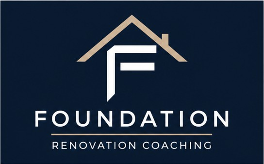

I'm just getting started
Strategy Session™
Clarify your goals, priorities, budget assumptions, risks, and next steps.
Renovation coaching for San Diego homeowners
Planning a major renovation should not feel overwhelming. Foundation provides experienced, independent guidance to help you understand your options, reduce risk, and make informed decisions before, during, and after construction.
No referral fees. No preferred contractors. Your decisions stay yours.

Most homeowners renovate once or twice in their lives. Most construction professionals do it every day. Foundation bridges that experience gap through independent renovation coaching.
Services
Choose the support that fits the stage you are in today.
Clarify your goals, priorities, budget assumptions, risks, and next steps.
Review your plans for alignment, missing information, constructability concerns, and value opportunities.
Compare scope, allowances, exclusions, schedule, and value without being told which contractor to select.
Periodic coaching for change orders, progress questions, schedules, and key decisions.
Document visible punch items, incomplete work, and closeout questions before final payment.
How It Works
A complimentary conversation about your project, concerns, and current stage.
A focused working session to organize priorities, risks, and unanswered questions.
A written plan documenting what we learned and the next decisions ahead.
Add only the Plan Review, Bid Review, Construction Support, or Final Walk services you need.
Make informed decisions while remaining fully in control of your renovation.
Meet Your Renovation Coach
I'm Jon Lourash. I founded Foundation to help homeowners navigate complex renovations with clearer information, practical guidance, and less uncertainty.
I'm not your contractor, architect, or personal project manager. I do not sell renovations, accept referral fees, or choose project professionals for you. My role is to help you understand the information in front of you so you can make your own informed decisions.
Start with a Discovery Call →Common Questions
No. Foundation does not maintain a preferred-provider list or make the final selection for you. We help you compare information, identify questions, and understand tradeoffs so you can decide for yourself.
No. Construction Support is coaching and independent feedback. Foundation does not direct trades, supervise the jobsite, control the contractor's schedule, or make decisions on your behalf.
Yes. Each service is available independently. The Strategy Session and Roadmap Report can help identify which future services may provide meaningful value as your project develops.
Start Here
Schedule a complimentary Discovery Call to discuss your project and determine whether Foundation can help.